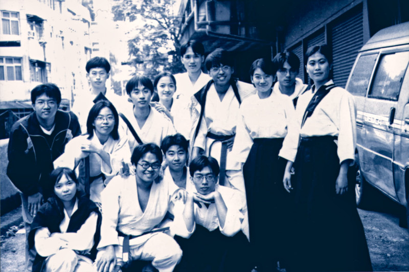
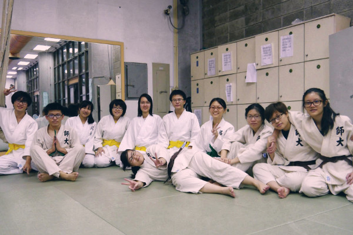
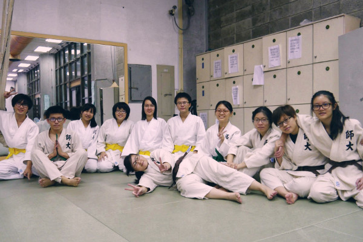

社團簡史
About us



師大合氣道社前身為「師大教職員工合氣道聯誼會」，由本校李虎雄教授(三段），為增進教職員工健康、提倡合氣道運動，邀請
廖學政老師(四段）及多位助教將合氣道運動帶入師大校園。爾後，由熱愛合氣道的衛教系86 級學生朱健良等人，於民國86 年5 月成立學生社團。
本社創立後，由陳昌平老師(六段) 及助教團指導，每年於全國中正盃及晉段考試中皆有佳績。陳昌平師範於民國一百年六月四日因病逝世。
本社現今由王獻毅老師(五段) 與沈彥良老師(四段)指導，並有多位助教協同教學。 本社自成立以來，吸引了對合氣道有興趣的人士參加，包含校內在學生與 校外社會人士，其中不乏來自其他國家的外籍朋友，社團發展蓬勃。
社團活動方面，除精進合氣道學習的練習例會之外，還會舉辦各式活動以 增進社員感情，如社遊、湯圓例會、蛋糕例會、聖誕例會與送舊活動等。
合氣道源自日本，屬於不爭不鬥的武術，講求以柔克剛，原理上與柔道相 似，並不強調蠻力。不論男女老幼接可練習，對於合氣道有興趣的朋友可以前來例會參觀。
本社創立後，由陳昌平老師(六段) 及助教團指導，每年於全國中正盃及晉段考試中皆有佳績。陳昌平師範於民國一百年六月四日因病逝世。
本社現今由王獻毅老師(五段) 與沈彥良老師(四段)指導，並有多位助教協同教學。 本社自成立以來，吸引了對合氣道有興趣的人士參加，包含校內在學生與 校外社會人士，其中不乏來自其他國家的外籍朋友，社團發展蓬勃。
社團活動方面，除精進合氣道學習的練習例會之外，還會舉辦各式活動以 增進社員感情，如社遊、湯圓例會、蛋糕例會、聖誕例會與送舊活動等。
合氣道源自日本，屬於不爭不鬥的武術，講求以柔克剛，原理上與柔道相 似，並不強調蠻力。不論男女老幼接可練習，對於合氣道有興趣的朋友可以前來例會參觀。
民國90年制訂
民國93年11月修訂
民國93年11月修訂
組織章程
Charter & Bylaws
第一章、總則
第一條：本社定名為國立臺灣師範大學合氣道社。
第二條：本社推展合氣道運動，以鍛鍊強健體魄，增進同學防衛能力，進而提昇內在氣質為宗旨。
第三條：本社參加中華民國合氣道協進會為團體會員，並接受技能指導。
第四條：本社社址設於國立臺灣師範大學所在地。
第二條：本社推展合氣道運動，以鍛鍊強健體魄，增進同學防衛能力，進而提昇內在氣質為宗旨。
第三條：本社參加中華民國合氣道協進會為團體會員，並接受技能指導。
第四條：本社社址設於國立臺灣師範大學所在地。
第二章、社員
第一條：凡對本社活動有興趣之現在本校肄業同學，均得申請為本社社員，並於完成入社手續之後，
成為本社社員。
第二條：凡有違背本社社章行為，毀損本社社譽，不服從社員大會及社務會議之決定者視情況輕重，
得由理事長提請社員大會分別警告或除名。
第三條：本社社員畢業後得羅致為本社榮譽社員，並歡迎參加本社所舉辦的各項例會活動，上段者得
羅致為本社助教並豁免繳納社費。
第四條：本社社員應享有權利如下：
(一) 發言權及表決權
(二) 選舉權及被選舉權(榮譽社員不得行使之)
(三) 參加本社所舉辦之各項活動
(四) 其他應享之權益
第五條：本社社員應盡之義務如下：
(一) 遵守本社團組織章程及決議案
(二) 對本社社務及活動有負責及推行之義務
(三) 按時繳納社費及指導費；未如期繳納者，總務必要時有權將色帶扣
(四) 指導中途加入之新進社員
(五) 維護場地清潔
(六) 其他應盡之義務
成為本社社員。
第二條：凡有違背本社社章行為，毀損本社社譽，不服從社員大會及社務會議之決定者視情況輕重，
得由理事長提請社員大會分別警告或除名。
第三條：本社社員畢業後得羅致為本社榮譽社員，並歡迎參加本社所舉辦的各項例會活動，上段者得
羅致為本社助教並豁免繳納社費。
第四條：本社社員應享有權利如下：
(一) 發言權及表決權
(二) 選舉權及被選舉權(榮譽社員不得行使之)
(三) 參加本社所舉辦之各項活動
(四) 其他應享之權益
第五條：本社社員應盡之義務如下：
(一) 遵守本社團組織章程及決議案
(二) 對本社社務及活動有負責及推行之義務
(三) 按時繳納社費及指導費；未如期繳納者，總務必要時有權將色帶扣
(四) 指導中途加入之新進社員
(五) 維護場地清潔
(六) 其他應盡之義務
第三章、組織
第一條：本社以社員大會為最高權力機構，由全體法定社員組成，其功能為
(一) 制定或修訂本社章程
(二) 選舉理事五至七人，監事三人，分別成立理事會，監事會
(三) 選舉與罷免本社之理事
(四) 對社務會議提出之重要決議案進行表決
第二條：本社於社團指導老師之下，另設有助教數人協助技術教學指導。
第三條：本社設理事長，副理事長與監事長各一人，理事長，副理事長及監事長，分別由理事與監事
推選而產生。皆在開票當晚之社員大會結束前推出。
第四條：本社理事資格為入社滿六個月之社員，由社員大會提名並選舉後產生，任期為一年，不得連任
第五條：監事資格為曾任本社理事或有本社兩年以上幹部經驗者。
第六條：本社理事會下設立活動股、文書股、宣傳股、總務股、公關股、器材股、家長股及資訊股共
八股。各股股長由理監事聯席會議通過產生。
(一) 制定或修訂本社章程
(二) 選舉理事五至七人，監事三人，分別成立理事會，監事會
(三) 選舉與罷免本社之理事
(四) 對社務會議提出之重要決議案進行表決
第二條：本社於社團指導老師之下，另設有助教數人協助技術教學指導。
第三條：本社設理事長，副理事長與監事長各一人，理事長，副理事長及監事長，分別由理事與監事
推選而產生。皆在開票當晚之社員大會結束前推出。
第四條：本社理事資格為入社滿六個月之社員，由社員大會提名並選舉後產生，任期為一年，不得連任
第五條：監事資格為曾任本社理事或有本社兩年以上幹部經驗者。
第六條：本社理事會下設立活動股、文書股、宣傳股、總務股、公關股、器材股、家長股及資訊股共
八股。各股股長由理監事聯席會議通過產生。
第四章、職權
第一條：本社各組織職權如下：
(一）監事會：1、監督本社社務之執行，對失職幹部可行使彈劾權。
2、負責本社經費之審核。
3、加開社員大會及成立選舉委員會。
4、監事長負責加開監事會。
(二）理事會：1、擔任本社社務最高策劃及行者。
2、負責將各項活動經費之預算報請監事會審核通過。
3、理事長對外代表本社、對內向理事會負責，總理本社一切事務。
4、當理事長因故未能執行其職務時，由副理事長代理之。
5、副理事長負責助教群停車證事務之處理。
(三）活動股：負責本社各項大型活動。
(四）總務股：1、財物經費之收支及保管事宜。
2、社員用具器材之代購。
3、負責本社經費帳目之整理。
(五）文書股：資料整理及文書之編印、保管、收發事宜。
(六）公關股：本社之對內及對外之聯絡、社籍卡及通訊錄製作、交誼及康
(七）宣傳股：辦理本社有關宣傳事項如小宣、海社之製作。
(八） 器材股：場地佈置與活動器材的收編與保管、提醒宣佈社員攜帶劍杖
(九）家長股：家族制度的編制與推展及慶生活動。
(十）資訊股：社團bbs看版、網站之管理與支援社上所需的資訊設施。
第二條：舉辦各項活動時，各相關組別應相互支援與協助。
第三條：各股股長有培訓股員之責任，股員有參與各項由社上資助之人才培
第四條：本社幹部如有下列事項之一者，應予解任
(一) 不得已事故，經社員大會准其辭職者。
(二) 曠廢職務經社員大會決議，著其退職者。
(三) 職務上違反法令或其他重大不正當行為，經社員大會決議，著其退者
以上事件若發生於社員大會休會期間，得召開臨時社員大會決議之
(一）監事會：1、監督本社社務之執行，對失職幹部可行使彈劾權。
2、負責本社經費之審核。
3、加開社員大會及成立選舉委員會。
4、監事長負責加開監事會。
(二）理事會：1、擔任本社社務最高策劃及行者。
2、負責將各項活動經費之預算報請監事會審核通過。
3、理事長對外代表本社、對內向理事會負責，總理本社一切事務。
4、當理事長因故未能執行其職務時，由副理事長代理之。
5、副理事長負責助教群停車證事務之處理。
(三）活動股：負責本社各項大型活動。
(四）總務股：1、財物經費之收支及保管事宜。
2、社員用具器材之代購。
3、負責本社經費帳目之整理。
(五）文書股：資料整理及文書之編印、保管、收發事宜。
(六）公關股：本社之對內及對外之聯絡、社籍卡及通訊錄製作、交誼及康
(七）宣傳股：辦理本社有關宣傳事項如小宣、海社之製作。
(八） 器材股：場地佈置與活動器材的收編與保管、提醒宣佈社員攜帶劍杖
(九）家長股：家族制度的編制與推展及慶生活動。
(十）資訊股：社團bbs看版、網站之管理與支援社上所需的資訊設施。
第二條：舉辦各項活動時，各相關組別應相互支援與協助。
第三條：各股股長有培訓股員之責任，股員有參與各項由社上資助之人才培
第四條：本社幹部如有下列事項之一者，應予解任
(一) 不得已事故，經社員大會准其辭職者。
(二) 曠廢職務經社員大會決議，著其退職者。
(三) 職務上違反法令或其他重大不正當行為，經社員大會決議，著其退者
以上事件若發生於社員大會休會期間，得召開臨時社員大會決議之
第五章、會議
第一條：本社社員大會每學期舉行一次，商討本社重要事項，必要時得由理事長或三分之一以上社
員連署召開臨時社員大會並有三分之二社員出席始成立。
員連署召開臨時社員大會並有三分之二社員出席始成立。
第六章、經費
第一條：本社經費之來源：
(一)學校贊助之活動經費。
(二)社員繳交之社費。
(三)各活動參與人員繳交經費。
(四)其他。
第二條：本社經費之使用：
(一)各組依需要於學期初開列預算表，經理事會通過、監事會審核核準。
(二)舉辦各項活動之開支，需於一個月內向總務報帳。學期中之經費審核，由總務股每月的公開
徵信及監事會按時查帳負責
(一)學校贊助之活動經費。
(二)社員繳交之社費。
(三)各活動參與人員繳交經費。
(四)其他。
第二條：本社經費之使用：
(一)各組依需要於學期初開列預算表，經理事會通過、監事會審核核準。
(二)舉辦各項活動之開支，需於一個月內向總務報帳。學期中之經費審核，由總務股每月的公開
徵信及監事會按時查帳負責
第七章、附則
第一條：本章程未盡之事宜，得由社員提議，提請社員大會通過後，呈請校
第二條：本章程經社員大會通過，呈報校長核定後實施，修正時亦同。長核定之。
第二條：本章程經社員大會通過，呈報校長核定後實施，修正時亦同。長核定之。